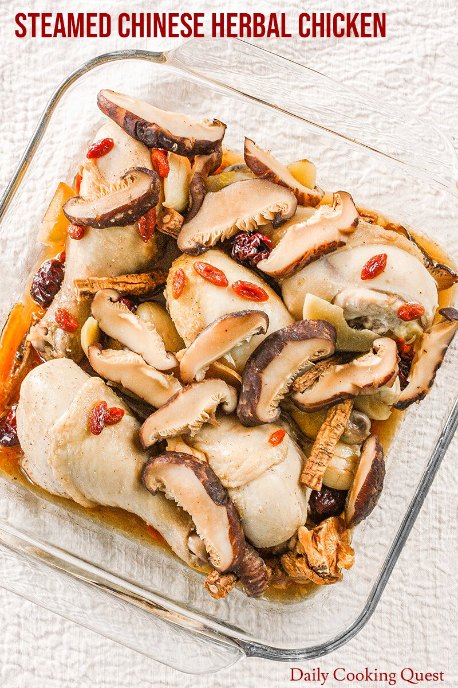

Herbal Chicken

Ingredients
| Ingredients |
| Chicken Drumsticks |
| Soy Sauce |
| Shaoxing Wine |
| Sesame Oil |
| Sugar |
| Ground White Pepper |
| Dried Shiitake Mushrooms |
| Garlic |
| Ginger |
| Codonopsis Root |
| Angelica Root |
| American Ginseng |
| Goji Berries |
| Red Dates |
Preparation time
1hr 30 mins
Instructions
-
Marinate drumsticks with soy sauce, Shaoxing wine, sesame oil, sugar,
and ground white pepper for 2 hours. You can marinate chicken in
steamed proof dish.
-
Rehydrate shiitake in hot water until soft. Remove steam, and cut into
thin slices.
- Prepare a steamer on medium-high heat.
-
Once the chicken is ready to be steamed, add thinly sliced shiitake,
garlic, ginger, and all the Chinese herbs. Cover the steamed proof
dish with aluminum foil, and steam for 50 minutes.